DMK23:50อ. 1 ธ.ค. · Bangkok T1
6 ชม. 10 นาที
NRT08:00พ. 2 ธ.ค. · Tokyo T2
🧳 โหลด 20 กก./คน · ถือขึ้น 7 กก.
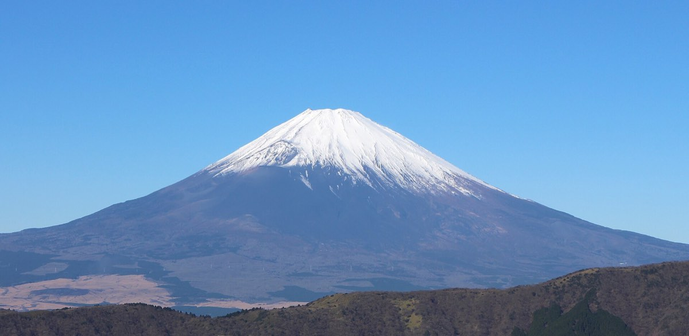
ทริปครอบครัว Sangsinsup · 4 คน
Tokyo · Mt. Fuji · Kyoto · Nara · Takayama · Shirakawa-go · Osaka
จองแล้ว ✓ · เวลาท้องถิ่นของแต่ละสนามบิน
🧳 โหลด 20 กก./คน · ถือขึ้น 7 กก.
🧳 โหลด 20 กก./คน · 1 ชิ้น 56×36×23 cm + ของส่วนตัว 1 ชิ้น 40×30×10 cm
กดจุด หรือกดเล่นอัตโนมัติ
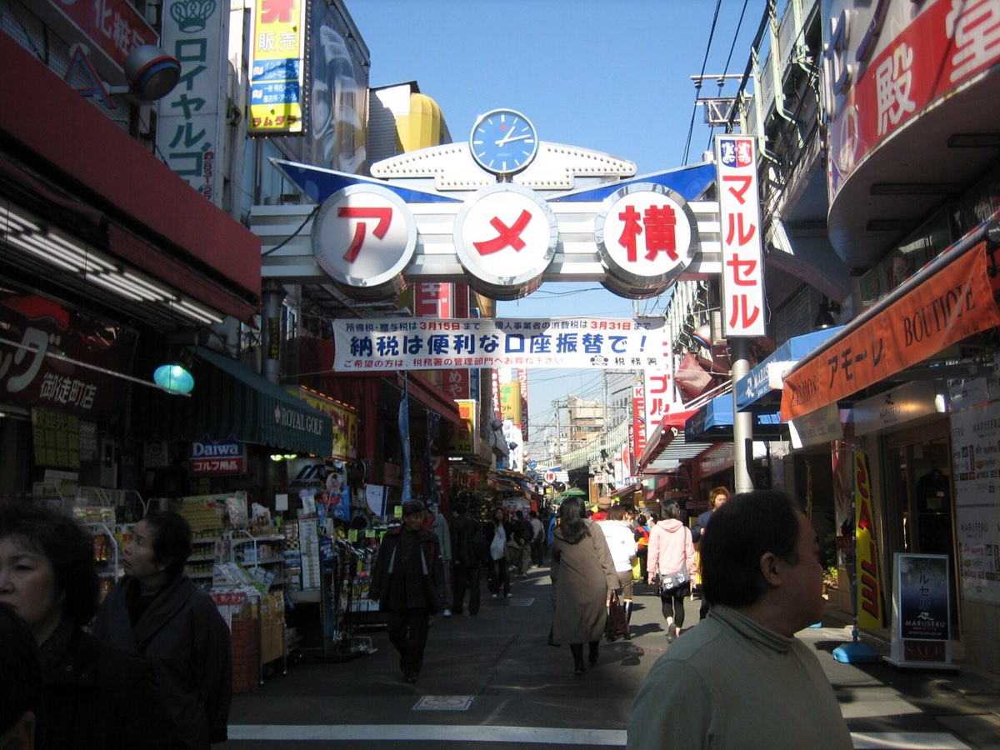
Day 2 · พ. 2 ธ.ค.
ที่พัก 2 คืน · ช้อปเสื้อหนาวคืนแรก · Skyliner ตรงจากนาริตะ 41 นาที
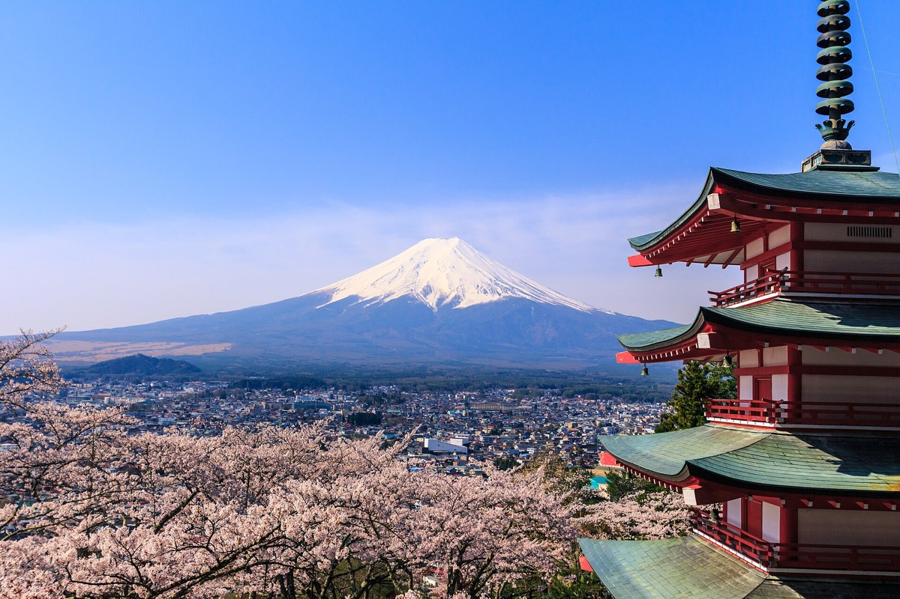
Day 3 · พฤ. 3 ธ.ค.
ขับรถเองจาก Ueno · เจดีย์ Chureito · Oishi Park · Oshino Hakkai
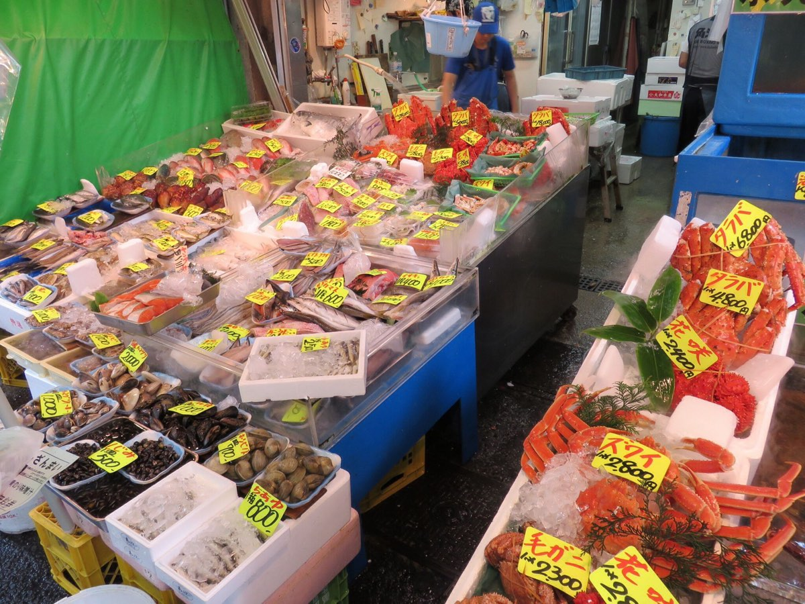
Day 4 · ศ. 4 ธ.ค.
มื้อเช้าซีฟู้ด แล้วนั่งชินคันเซ็นไปโอซาก้า
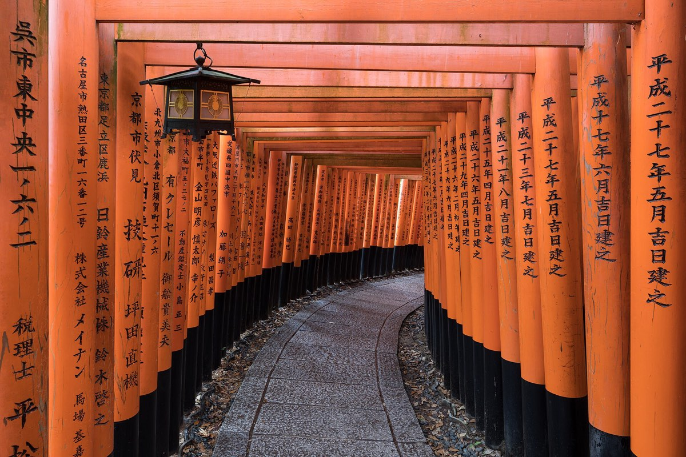
Day 5 · ส. 5 ธ.ค.
เดย์ทริปเกียวโต · ประตูโทริอิสีแดงนับพัน
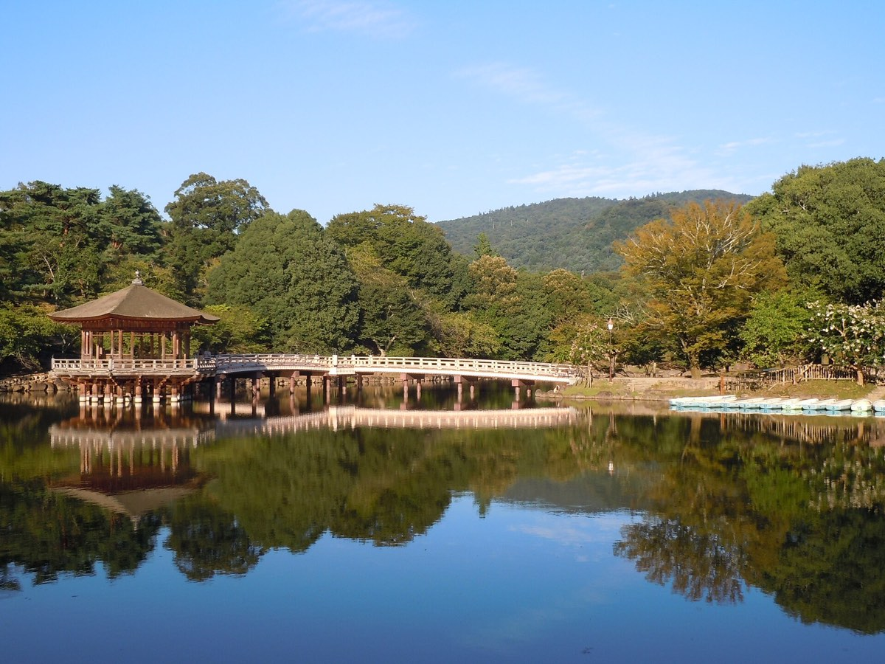
Day 6 · อา. 6 ธ.ค.
ให้อาหารกวาง · ไหว้พระใหญ่ Todai-ji
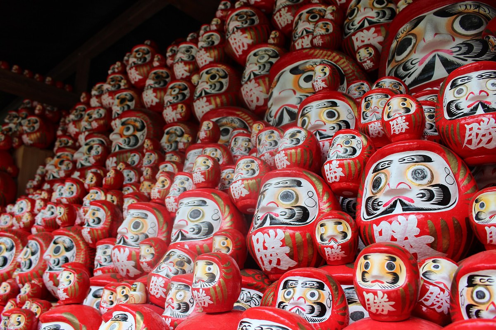
Day 6 · อา. 6 ธ.ค.
วัดดารุมะแห่งชัยชนะ · ตุ๊กตาแดงทั่วหุบเขา
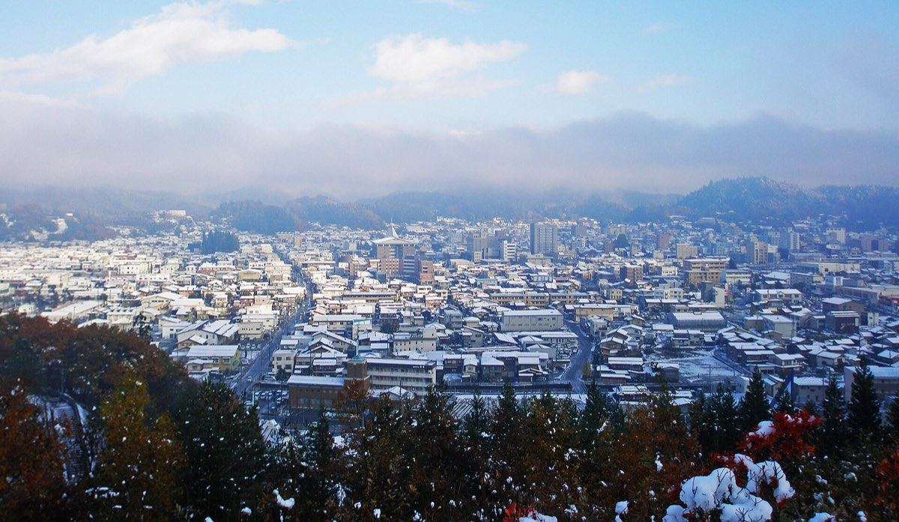
Day 7 · จ. 7 ธ.ค.
JR Hida จาก Nagoya · พัก 1 คืนที่ Takayama Ouan · เนื้อฮิดะ
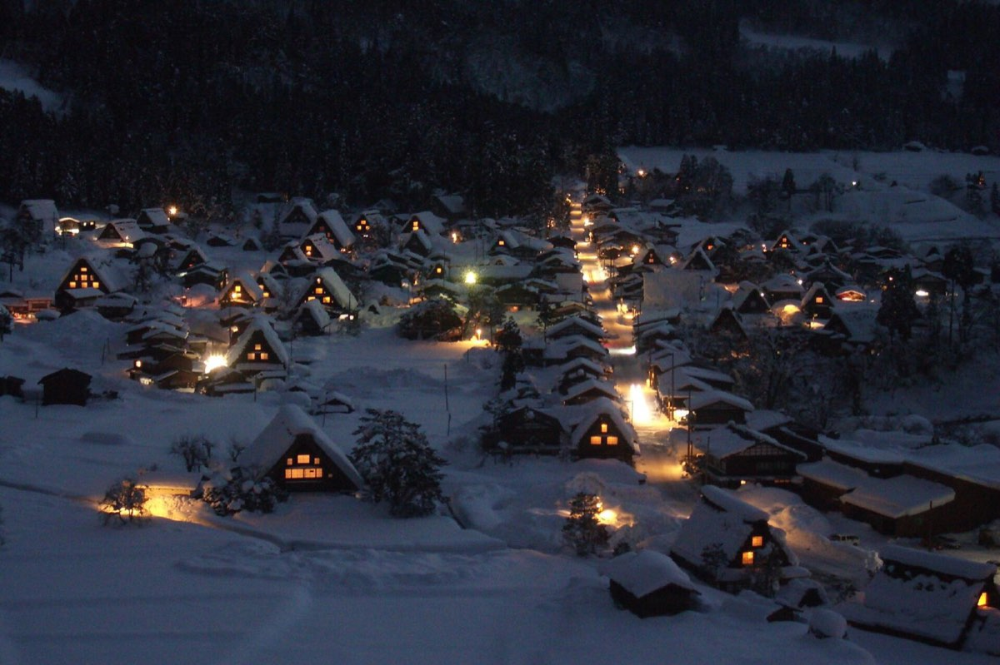
Day 7 · จ. 7 ธ.ค.
หมู่บ้านหลังคาฟางในหิมะ · Nohi Bus 50 นาทีจาก Takayama
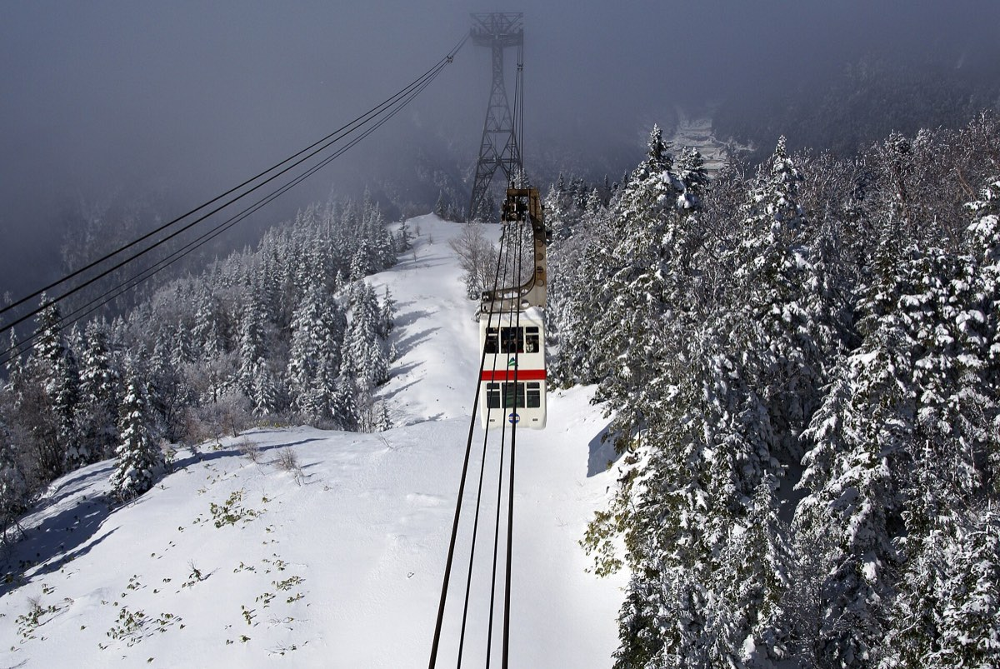
Day 8 · อ. 8 ธ.ค.
กระเช้า 2 ชั้นขึ้นสูง 2,156 ม. · วิวเทือกเขาแอลป์ญี่ปุ่น
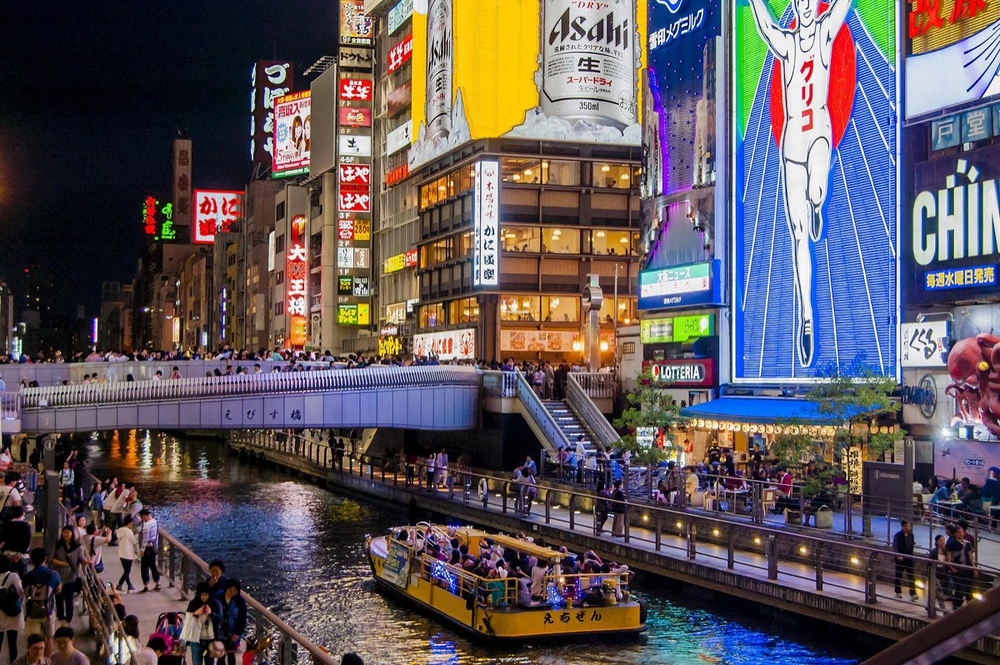
Day 9 · พ. 9 ธ.ค.
วันช้อปปิ้งใหญ่ · Shinsaibashi · Namba
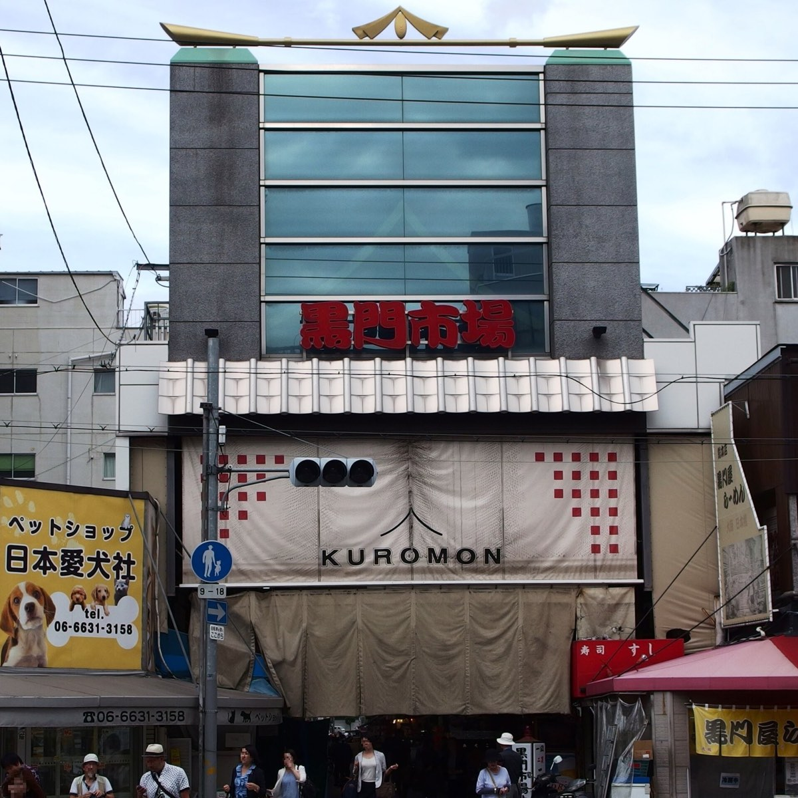
Day 10 · พฤ. 10 ธ.ค.
ตลาดคุโรมงมื้อสุดท้าย · Nankai ไปสนามบิน · บิน 19:45
เลือกวัน
อ. 1 ธ.ค. · Bangkok DMK T1
🛏 บนเครื่อง
พ. 2 ธ.ค. · NRT T2 → Ueno
🛏 MONday Apart Premium Ueno
พฤ. 3 ธ.ค. · Ueno → Kawaguchiko → Ueno · ~120 กม. ต่อทาง
🛏 MONday Apart Premium Ueno
ศ. 4 ธ.ค. · Tokyo → Shin-Osaka → Ebisucho → Umeda
🛏 ESLEAD Hotel Osaka Ebisu
ส. 5 ธ.ค. · Osaka → Kyoto → Osaka
🛏 ESLEAD Hotel Osaka Ebisu
อา. 6 ธ.ค. · Osaka → Nara → Osaka → Minoh (Katsuo-ji) → Shinsekai
🛏 ESLEAD Hotel Osaka Ebisu
จ. 7 ธ.ค. · Shin-Osaka → Nagoya → Takayama → Shirakawago → Takayama
🛏 Takayama Ouan Hotel
อ. 8 ธ.ค. · Takayama → Shinhotaka Ropeway → Takayama → Nagoya → Osaka
🛏 ESLEAD Hotel Osaka Ebisu
พ. 9 ธ.ค. · Shinsaibashi · Dotonbori · Namba
🛏 ESLEAD Hotel Osaka Ebisu
พฤ. 10 ธ.ค. · Osaka → KIX T1
🛏 บนเครื่อง
ศ. 11 ธ.ค. · Bangkok DMK T1
🛏 บ้าน
ตั๋ว · ที่พัก · รถ
ต้องระบุว่าใช้ที่ญี่ปุ่น → ขอแบบอนุสัญญาเจนีวา 1949 (อายุ 1 ปี) · ถ้าเล่มจากทริป เม.ย. ยังไม่หมดอายุ ใช้เล่มเดิมได้
เลือกที่นั่งแถว E (คู่ = D-E) ฝั่งขวา เห็นภูเขาไฟฟูจิระหว่างทาง · จอง 4 ที่นั่งติดกัน · กระเป๋าใหญ่เกิน 160 cm (กว้าง+ยาว+สูง) ต้องจองที่นั่งแถวหลังสุดแบบมีที่วางกระเป๋า (ฟรี แต่ต้องจอง) · บางบัตรเครดิตต่างประเทศใช้กับ smartEX ไม่ผ่าน — สำรอง: Klook หรือเคาน์เตอร์ JR
ต้องถึง Nagoya ก่อน 08:25 เพื่อต่อ Hida 08:43 (เผื่อเปลี่ยนชานชาลา ~15 นาที) · Nozomi ใช้ ~50 นาที · ผูกตั๋วกับ Suica ในมือถือได้ แตะเข้าสถานีได้เลย
smartEX เปลี่ยนเวลาได้ฟรีก่อนรถออก → จองไว้ก่อน ถ้า Hida ช้าค่อยเลื่อนในแอป · ถึง Shin-Osaka ~18:10 · ถึงโรงแรม ~18:45 · ผูกตั๋วกับ Suica ในมือถือได้ แตะเข้าสถานีได้เลย
⚠️ แผนแม่ (22 ต.ค.) บอกว่า smartEX รวมตั๋ว Hida ให้ได้ — smartEX ขายเฉพาะชินคันเซ็น Tokaido/Sanyo/Kyushu ต้องจอง Hida แยกช่องทางนี้ · ตั้งปลุกจองวันเปิด — นั่งฝั่งซ้าย/Wide View ชมวิวหุบเขา · ⚠️ ต.ค. 2026 มีข่าว JR Central ขาดขบวนรถ HC85 (อุบัติเหตุ 2 ต.ค.) ทำให้ Hida บางเที่ยวงดวิ่ง → เช็คประกาศ JR Central อีกครั้งตอนจอง · ทางเลือก: Hida 25 ตรงจาก Osaka 07:58 → Takayama 12:14 (ไม่ต้องเปลี่ยนรถ วันละเที่ยว — ต้องเช็คว่ายังวิ่ง)
เลือกรอบที่เป็น Reservation Required เท่านั้น จะได้ที่นั่งแน่นอน · จ่ายบัตรแล้วได้ e-ticket ทางอีเมล · ⚠️ แผนแม่เขียนกลับ 16:55 — ตารางจริงไม่มีรอบนี้ มี 16:15 (ถึง 17:20) · 16:35 (ถึง 17:25) · 17:25 · 17:30 · ตารางที่เห็นเป็นฉบับปัจจุบัน ต้องเช็คตารางฤดูหนาวอีกครั้งวันจอง · หิมะหนักรถอาจช้า 2 ชม.+
⚠️ แผนแม่ (22 ต.ค.) บอกว่า smartEX รวมตั๋ว Hida ให้ได้ — smartEX ขายเฉพาะชินคันเซ็น Tokaido/Sanyo/Kyushu ต้องจอง Hida แยกช่องทางนี้ · แผนแม่เขียน 14:38 — ตารางจริงออก 14:46 · ถ้าพลาด: Hida 16 ออก 15:34 → Nagoya 18:06
แผนแม่: ซื้อ "Okuhida Value Ticket" (2 วัน) ที่ Takayama Nohi Bus Center พอถึงวันที่ 7 — รวมรถบัสไป-กลับ Shinhotaka + กระเช้า (~¥7,000/คน ถูกกว่าซื้อแยก ¥8,200) · ถ้าซื้อออนไลน์ (Veltra/Klook) ต้องมีเน็ต ใช้ภาพแคปไม่ได้ · ซื้อตั๋วที่เคาน์เตอร์/ตู้ตั้งแต่เย็นวันที่ 7 ได้เลย ถามตั๋วชุดรวมกระเช้า (ถูกกว่าซื้อแยก) · ⚠️ ตารางบนเว็บระบุบางรอบวิ่งถึง 30 พ.ย. → ต้องเช็คตารางฤดูหนาว (1 ธ.ค.–) ว่ารอบ 07:40 ยังมี · ขากลับ 11:55 ถึง Takayama ~13:31
เวลาฤดูหนาว (1 ธ.ค.–31 มี.ค.) 09:00–15:30 · ปิดซ่อมประจำปี 24–27 พ.ย. 2026 (ไม่ชนวันเรา ✓) · ลมแรง/พายุหิมะอาจหยุดวิ่ง → เช็คสถานะเช้าวันที่ 8 · แผนสำรอง: เมืองเก่า Takayama (Sanmachi Suji) + ตลาดเช้า Miyagawa
วิ่งทุก 20–40 นาที · ซื้อหลังผ่าน ตม. จะไม่ต้องกังวลเรื่องเครื่องดีเลย์ · แผนแม่: ซื้อล่วงหน้าผ่าน Klook/KKday ได้ถูกกว่า แล้วสแกน QR ที่ตู้สีน้ำเงินในสนามบิน
แผนแม่เขียน HARUKA จาก Tennoji/Shin-Imamiya — HARUKA ไม่จอด Shin-Imamiya (จอด Tennoji) · จากโรงแรม Ebisu ใช้ Nankai ที่ Shin-Imamiya ง่ายและถูกกว่า ~40 นาที
เงินเยน + เงินบาท · ¥100 ≈ ฿21
รวมทั้งทริป 4 คน (ประมาณ)
฿233,067
¥1,109,841 · ต่อคน ฿58,267
¥100 ≈ ฿21 · อัตราอ้างอิงช่วง ส.ค.–ต.ค. 2026 (~0.208–0.214) · ปัดขึ้นเผื่อค่าธรรมเนียมบัตร · ควรเช็คอีกครั้งก่อนแลกเงิน · ไม่รวมช้อปปิ้งส่วนตัว
| รายการ | เยน | บาท | สถานะ |
|---|---|---|---|
| ✈ เที่ยวบินThai AirAsia X ไป-กลับ 4 คน (Trip.com)จ่ายแล้ว 27 มี.ค. · ยังไม่รวมส่วนต่าง/ค่าธรรมเนียมเปลี่ยนวันกลับ (18 ก.ย.) ถ้ามี | ¥389,927 | ฿81,885 | จ่ายแล้ว |
| 🏨 ที่พักMONday Apart Premium Ueno · 2 คืนจ่ายแล้ว 3 ก.ค. | ¥75,052 | ฿15,761 | จ่ายแล้ว |
| 🏨 ที่พักESLEAD Osaka Ebisu · 6 คืนAgoda ตัดบัตร 29 พ.ย. | ¥83,897 | ฿17,618 | จองแล้ว · จ่ายทีหลัง |
| 🏨 ที่พักTakayama Ouan · 1 คืนจ่ายภายหลังผ่าน Agoda · ไม่รวมอาหารเช้า | ¥38,325 | ฿8,048 | จองแล้ว · จ่ายทีหลัง |
| 🚄 เดินทางระหว่างเมืองShinkansen · JR Hida · Nohi Bus · Skyliner · กระเช้า (4 คน) — ตามแผนที่เลือกคำนวณจากหน้าเทียบแผน (ไม่รวมรถเช่าวันฟูจิ) | ¥226,040 | ฿47,468 | ประมาณการ |
| 🚗 รถเช่าวันฟูจิToyota C2 1 วัน รวมประกันเต็มจองแล้ว 23 ต.ค. · จ่ายที่ร้านวันรับรถ | ¥14,767 | ฿3,101 | จองแล้ว · จ่ายทีหลัง |
| 🚗 รถเช่าวันฟูจิทางด่วน (ETC) + น้ำมันทางด่วนไป-กลับ ~¥7,000–8,500 + น้ำมัน ~¥3,000 | ¥10,500 | ฿2,205 | ประมาณการ |
| 🚇 รถในเมืองIC card (Suica/ICOCA) ~¥1,500/คน/วัน × 8 วันKyoto · Nara · Katsuo-ji · Osaka · Tokyo | ¥48,000 | ฿10,080 | ประมาณการ |
| 🍜 อาหาร~¥5,000/คน/วัน × 9 วันมื้อพิเศษ: เนื้อฮิดะ, ซีฟู้ด Tsukiji/Kuromon | ¥180,000 | ฿37,800 | ประมาณการ |
| 🎟 ค่าเข้าชมวัด · สวน · อื่นๆKatsuo-ji ~¥500/คน, Todai-ji ~¥800/คน ฯลฯ | ¥10,000 | ฿2,100 | ประมาณการ |
| 🛡 ประกัน + eSIMประกันเดินทาง 4 คน + eSIM 4 ซิมประมาณการ · ยังไม่ได้ซื้อ | ¥33,333 | ฿7,000 | ประมาณการ |
| รวม | ¥1,109,841 | ฿233,067 | |
| ต่อคน | ¥277,460 | ฿58,267 |
ค่ารถแยกรายวัน + เทียบแผน JR Pass → หน้าคุยกัน
ติ๊กเล่นได้ (จำไว้ในเครื่องนี้)